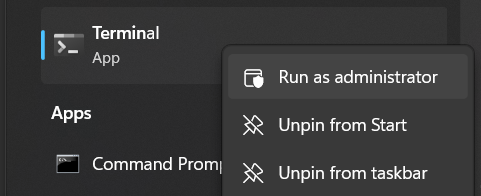

Installing and launching the server locally
The following instructions will install and launch the Dashboards server and all related services. Steps 1-4 and 6 only need to be run once, Step 5 only if the source code has changed, and Step 7 every time the server is launched.
1. Install WSL2 and Ubuntu (for Windows machines)
Start a Windows terminal as Administrator by searching for “Terminal” in the command line and right-clicking to expose the menu:
{kind=link}
If Terminal is not installed, it can be downloaded from the Microsoft Store at: https://www.microsoft.com/store/productid/9N0DX20HK701.
In the new terminal, enter wsl --install and follow the prompts. For detailed instructions,
see https://learn.microsoft.com/en-us/windows/wsl/install.
2. Install Docker Desktop
Follow the instructions at: https://docs.docker.com/desktop/install/windows-install/. Be sure that the WSL2 backend is enabled.
Note: read Do I need to pay to use Docker Desktop?.
3. Clone the repository
Clone the repository by running:
git clone https://github.com/yinchi/hpath.git
cd hpath
Note: the frontend source code resides on a separate Git repository that is cloned from when building the corresponding Docker container in Step 6.
4. Set up the development environment
Continuing from above, run:
sudo apt install python3.11
python3.11 -m venv --upgrade-deps .venv
source .venv/bin/activate
pip install pip-tools
pip-compile
pip-sync
This will set up a virtual environment, install pip-tools for Python package management,
and install all packages lists in requirements.in and their dependencies.
5. Build the documentation
Continuing from above, run:
chmod +x build-docs.sh
./build-docs.sh
6. Configure the frontend settings
By default, the frontend website is set up to communicate with the backend on localhost.
Edit site.config.ts to change this if hosting the website on a network.
{kind=link}
7. Build and launch the server using Docker Compose
In a WSL terminal, cd to the hpath directory (the root of the cloned repository), then run:
docker compose build
docker compose up
This will launch the main server on http://localhost:80 and the documentation server on
http://localhost:8000. The simulation backend server can also be accessed via
http://localhost:5000.
The server can be stopped by typing CTRL+C in the terminal above, or using the Docker Desktop
graphical interface. The terminated services can be removed using docker compose down, and
re-launched using docker compose up.